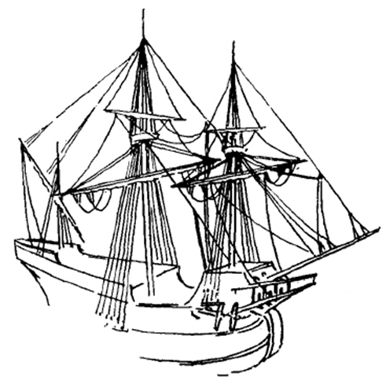
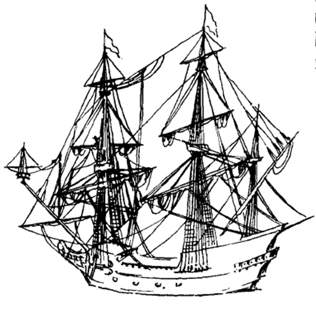
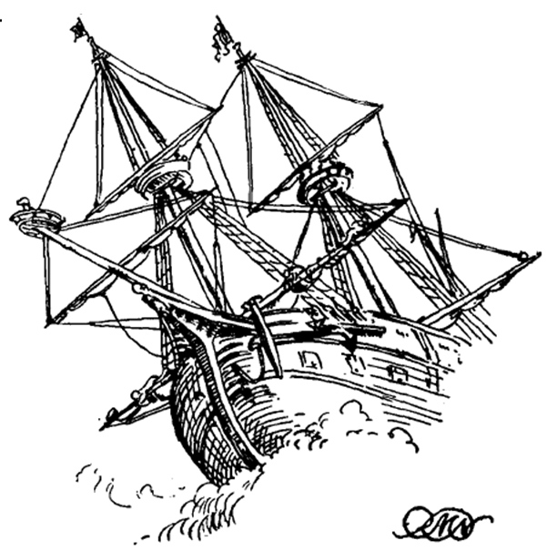

Queste (Palandre-g.-g.) sono oggidì, secondo il costume del nostro arsenale ; bastimenti a guisa di Marcilìane; ma con un picciolo sprone a prua , ed in puppa con due portelli . Nell' una, e nell’ altra tengono due occhi di bue per poterle armizzare in quarto. Ordinariamente sono cinquanta piedi in colomba, ed in larghezza eccedono la metà della loro lunghezza. Portano un bordo piuttosto elevato, ed hanno una sola ben raddobbata coperta che forma un' ampia area capace a sostenere più letti di bombe. Portano una sol vela coll' alberatura nella metà pendente alquanto verso la prua .
[Паландры] в наше время по регламенту Арсенала строят подобно марсилианам, но с небольшим шпироном в носу и двумя портами в корме. И у тех и у других имеется по два клюза, обеспечивающих постановку на якорь. Обычно они имеют длину по килю 50 футов (16 м 24 см - g.-g.) и ширину в два раза меньше длины (8 м 12 см - g.-g.). Имеют высокий борт и одну прочную палубу, усторенную так, что она способна принимать много стеллажей для бомб. Имеется единственный парус на мачте, слегка наклоненной к носу.
Formaleoni, Saggio sulla nautica antica de'Veneziani (1783), 21-22
Таким образом, марсилиана становится синонимом неповоротливой баржи, использовавшейся для подвоза боеприпасов. Окончательно добил марсилиану переход ее от самоходного судна к буксируемой барке. К началу XVIII века марсилиана как самостоятельный тип судна исчезает.
Вернемся, однако, к эпохе расцвета этого корабля. Изображений, строго идентифицированных как изображение марсилианы, пока не обнаружено. Однако не может быть, чтобы столь распространенное судно не попало в поле зрения художников того времени. Ведь еще в 1602 году только в венецианском флоте насчитывалось 78 марсилиан. Правда, это были не те тяжелые, схожие с хольком, корабли водоизмещением около 700 тонн, а сравнительно небольшие суда, бравшие на борт около 200 тонн груза. (Вот эта небольшая грузоподъемность их и сгубила. Сенат Венеции в начале XVII века принимает решение запретить транспортировку зерна на восток и перевозить соль на Кипр на кораблях водоизмещение менее 240 тонн. И вот уже в 1619 году число марсилиан сокращается почти вдвое – до 38 единиц. Им разрешено плавание только до острова Закинф.) Значит, мы должны искать изображения марсилианы на рисунках, датированных концом XVI – началом XVII века. Пару таких изображений обнаружил в начале прошлого века английский исследователь R. Morton Nance. Первое – на небольшой шкатулке с изображением морского побережья Прованса, которая хранится в Лувре.

На рисунке хорошо представлен пухлый нос и зауженная корма, свойственные марсилиане. Эти особенности особенно хорошо проявляются в сравнении с изображенным на этой же шкатулке галеоном

Это типичное изображение корабля начала XVII века, и по сравнению с ним наша марсилиана кажется старушкой. У галеона более низкий и закругленный шпирон, руслень грот-мачты расположен выше, в корме хорошо видна галерея, в то время как корма марсилианы плоская, лишенная такой галереи. Еще более разительны отличия в рангоуте и такелаже. У галеона отчетливо видны блинда-стеньга - маленькая вертикальная мачта на оконечности бушприта, крюйс-стеньга, брам-стеньги на фоке и гроте, которых у марсилианы нет. Нет у нее и флагштоков. Единственно, в чем марсилиана выглядит более современной по сравнению с галеоном – расположение фок-мачты: у галеона она расположена перед бикгедом (носовой оконечностью бака); впрочем, это было типичным для крупных кораблей того периода.
R. Morton Nance приводит еще одно изображение, которое он относит к марсилианам.

Но здесь мы с ним вряд ли согласимся. Это изображение – фрагмент гравюры известного художника Casembrot

Casembrot, Abraham. Galleys in action with other vessels. National Maritime Museum, Greenwich, London
Мы его уже использовали раньше в своем журнале. И в том виде, как корабль изображен на этой гравюре, становится очевидным, что это скорее всего военный корабль.
Продолжим тему в следующий раз.